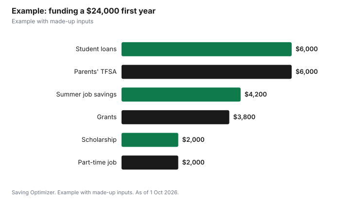

Education · Canada
How to Pay for University Without an RESP (or With Too Little in It)
You can pay for university without an RESP by stacking four things: grants that never have to be repaid, interest-free federal student loans, tax-free scholarships, and monthly cash flow from savings and part-time work. Apply for student aid even if you think your income is too high, because the federal grant for full-time students in 2026-27 is up to $525 for each month of study and federal loans charge no interest. If your child is still 15 or younger, opening an RESP now can still capture up to $1,000 a year of catch-up grant. A TFSA works as a flexible education fund for parents, and the student can transfer up to $5,000 a year of unused federal tuition credits to a parent or grandparent.
Key takeaways
- Federal grant for full-time students in 2026-27: up to $525 per month of study.
- Canada Student Loans charge no interest; repayment starts in the seventh month after you finish.
- Late RESP: up to $1,000 a year of catch-up CESG, but grants stop after the year the child turns 17.
- TFSA: $7,000 of new room in 2026; withdrawals restore room the next January.
- Full-time scholarships and bursaries are generally not taxable.
- Example with made-up inputs: a $24,000 first year funded without an RESP.
Step 1: if your child is under 18, a late RESP still pays
The federal government says the Canada Education Savings Grant adds 20% of the first $2,500 you contribute each year, or $500, with an extra $100 or $50 for low- and middle-income families, up to a lifetime $7,200. Unused grant room carries forward, so if you have missed years, you can contribute up to $5,000 in a year and receive up to $1,000. The grant is available until the end of the year the child turns 17, but at 16 or 17 only if at least $2,000 was contributed before the end of the year the child turned 15, or at least $100 a year in any four earlier years. So a parent of a 14-year-old can still catch up; a parent of a 16-year-old with no RESP history usually cannot.
| Rule | Detail |
|---|---|
| Basic grant | 20% of the first $2,500 a year, up to $500 |
| Extra grant (low or middle income) | $100 or $50 a year |
| Catch-up | Up to $1,000 a year on $5,000 of contributions, if you have unused room |
| Lifetime maximum | $7,200 |
| Last year for the grant | The year the child turns 17 |
| Ages 16 and 17 | Only with $2,000 contributed by the end of age 15, or $100 a year in any four earlier years |
| Canada Learning Bond | Up to $2,000 for low-income families, with no contributions |
If your family has a low income, the Canada Learning Bond adds up to $2,000 with no contributions needed, for children born in 2004 or later. A young adult who qualifies can request it themselves until the day before they turn 21. See opening an RESP for the Canada Learning Bond.
Step 2: apply for grants and interest-free loans
Student aid is the biggest source of money for many families without education savings. The federal regulation for 2026-27 keeps the Canada Student Grant for full-time students at up to $525 per month of study and sets the federal weekly loan limit for full-time students at $300. Provinces add their own grants and loans through the same application. The National Student Loans Service Centre says Canada Student Loans have been interest-free since 1 April 2023; only the provincial portions of Ontario and Saskatchewan loans still accrue interest. Repayment starts on the first day of the seventh month after you finish school.
| Item | Amount or rule |
|---|---|
| Canada Student Grant for Full-Time Students | Up to $525 per month of study |
| Federal loan limit | $300 per week of study |
| Interest on Canada Student Loans | None since 1 April 2023 |
| Provincial portions with interest | Ontario (prime plus 1.0%) and Saskatchewan (prime) |
| Repayment start | First day of the 7th month after your studies end |
For a made-up study period of 8 months and 34 weeks, those federal maximums would come to $4,200 of grant and $10,200 of loan room, before provincial aid and subject to your assessed need. Whether you get them depends on family income, costs and other resources, so apply early and let the assessment decide.
Step 3: use a TFSA as the parents' education fund
Without an RESP, a tax-free savings account is the most flexible place to save. The CRA says the TFSA dollar limit for 2026 is $7,000, added on 1 January, and any amount you withdraw is added back to your room on 1 January of the following year. That makes it easy to withdraw for tuition in August and keep the room. There is no matching grant, which is why an RESP still wins for children under 16, but there is no restriction on how the money is used.
Step 4: scholarships and the tuition transfer
The CRA says post-secondary scholarships, fellowships and bursaries are not taxable when you receive them for a program in which you are a full-time qualifying student, so every scholarship dollar is a full dollar. Students with little income often cannot use their own tuition credit. The CRA lets a student transfer up to $5,000 of the current year's federal tuition amount, minus what they need to reduce their own tax to zero, to a parent or grandparent. Ontario no longer has a provincial tuition credit, so Ontario families transfer only the federal amount. See transferring tuition to a parent.
Example with made-up inputs
These numbers are an example with made-up inputs. Riley's first year living in residence costs a made-up $24,000 for tuition, fees, residence, a meal plan and books. Riley's family has no RESP. Riley's student aid assessment brings $3,800 of federal and provincial grants and $6,000 of loans. Riley wins a $2,000 entrance scholarship, tax-free, and saved $4,200 from a summer job. Riley's parents withdraw $6,000 from a TFSA and get the room back the next January. A part-time campus job covers the last $2,000 over the year.
| Source | Amount |
|---|---|
| Grants (federal and provincial) | $3,800 |
| Student loans (federal portion interest-free) | $6,000 |
| Entrance scholarship (tax-free) | $2,000 |
| Summer job savings | $4,200 |
| Parents' TFSA withdrawal | $6,000 |
| Part-time campus job | $2,000 |
| Total first-year cost | $24,000 |

Steps
- If your child is 15 or younger, open an RESP now and use catch-up room.
- Ask whether your family qualifies for the Canada Learning Bond.
- Apply for student aid as soon as the application opens.
- Apply for scholarships and bursaries every year, not just in first year.
- Save in a TFSA for flexible withdrawals, and plan withdrawals before 31 December if you want the room back sooner.
- Have the student file a return each year and transfer unused tuition credits to a parent if it helps.
For more on costs and aid, see residence vs living at home, Canada Student Grant amounts and meal plan costs.
Sources
- Employment and Social Development Canada, How much money benefits could add to the RESP, canada.ca (Wayback copy), as of 1 Oct 2026.
- Canada Revenue Agency, Calculate your TFSA contribution room, canada.ca (Wayback copy), as of 1 Oct 2026.
- Canada Gazette, Part II, SOR/2026-139 (2026-27 Canada Student Grant amounts and weekly loan limit), published 1 Jul 2026, as of 1 Oct 2026.
- National Student Loans Service Centre, Things You Need to Know and Glossary, csnpe-nslsc.canada.ca, as of 1 Oct 2026.
- Canada Revenue Agency, Guide P105 Students and Income Tax 2025, canada.ca (Wayback copy), as of 1 Oct 2026.
- CPA Ontario, Tax Receipts (Ontario tuition credit eliminated 4 Sep 2017), cpaontario.ca, as of 1 Oct 2026.
- The student's costs, aid, savings and earnings in the example are an example with made-up inputs.
Frequently asked questions
Can I still open an RESP if my child is 15?
Yes. You can catch up on unused grant room at up to $1,000 a year. To keep getting the grant at 16 and 17, contribute at least $2,000 by the end of the year the child turns 15.
How much is the Canada Student Grant in 2026-27?
Up to $525 per month of study for full-time students, under the federal regulation for 2026-27.
Do Canada Student Loans charge interest?
No. They have been interest-free since 1 April 2023. The provincial portions of Ontario and Saskatchewan loans still accrue interest.
Is a TFSA good for university savings?
It is flexible: 2026 room is $7,000 and withdrawals restore room the next January, but there is no government grant as with an RESP.
Are scholarships taxable in Canada?
Post-secondary scholarships and bursaries are generally not taxable when you are a full-time qualifying student in the program.
Can my child transfer tuition credits to me?
Yes, up to $5,000 of the current year's federal tuition amount, minus what the student needs, to a parent or grandparent.
Researched and drafted with AI assistance and fact-checked against official Canadian sources. How we create content.
Disclosure: Saving Optimizer may earn a commission if a partner link is added later, such as a savings account or brokerage offer type. No partnership is claimed on this page. Education only, not financial advice.